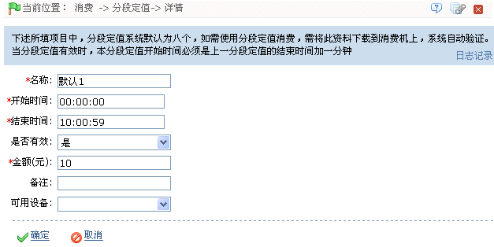

IC--8.2.1 分段定值
进入基本资料页面后的默认窗口即为分段定值设置页面，如上图所示，若不在此默认页面，用户可点击【分段定值】图标，进入分段定值设置页面。系统默认具有8个分段定值。
-
 编辑分段定值
编辑分段定值
 提示：操作前请仔细阅读页面中的操作提示。
提示：操作前请仔细阅读页面中的操作提示。
1、单击分段定值的“编号”，或分段定值所在行的“相关操作”下对应的【编辑】按钮，进入编辑分段定值页面：

根据需要修改各字段，具体修改方法如下：
名称：根据需要修改名称，直接输入即可。
开始时间、结束时间：设置该分段定值资料的开始和结束时间，时间设置方法，请参见附录1 常用操作中的3. 选择时间。
 注意：分段定值的开始时间必须是上一分段定值的结束时间加一分钟。
注意：分段定值的开始时间必须是上一分段定值的结束时间加一分钟。
是否有效：默认为“是”（即“有效”），可单击 按钮，在弹出的下拉框中，选择为“是”或“否”，选择为“是”该分段定值才有效，否则，为无效。
按钮，在弹出的下拉框中，选择为“是”或“否”，选择为“是”该分段定值才有效，否则，为无效。
金额：输入该分段定值的消费金额。
可用设备：单击按钮，在弹出的设备选择框中，选择设备。默认状态下为空。
2、修改完成后，单击【确定】按钮保存并返回分段定值页面；此时“分段定值资料”列表中将显示修改后的分段定值资料。
（1）、修改分段定值资料后，系统会自动生成一条命令。若设备已联接到系统中，则直接接收该命令，然后以系统中的分段定值资料为准，同步设备与系统中的分段定值资料；若设备尚未联接到系统，则待其联接到系统后，会实时获取命令，并执行该命令，然后同步该分段定值资料；
（2）、注意：该命令只作用于消费模式为“定值模式”的消费设备。若未选择“可用设备”，则命令将作用于系统中的所有消费模式为“定值模式”的消费设备；若选择了“可用设备”，则该命令仅作用于被选中的设备；同时只有被选中的消费设备才可使用该分段定值，系统中其他消费设备将无法使用该分段定值。